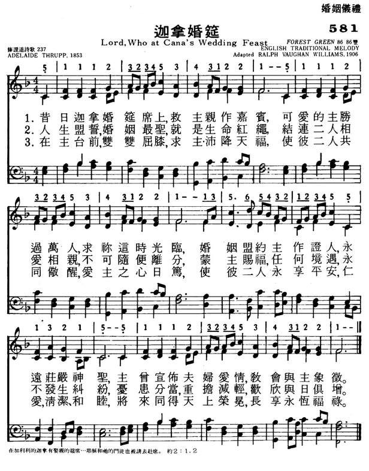
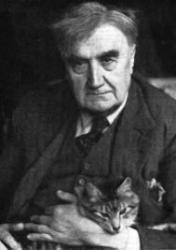

|
|
|
|
1 Lord, Who at Cana’s wedding feast 2 The holiest vow that man can make, 3 On those who at Thine altar kneel, Amen. The Hymnal: revised and enlarged as adopted by the General Convention of the Protestant Episcopal Church in the United States of America in the year of our Lord 1892 |
581迦拿婚筵
1.昔日迦拿婚筵席上，救主亲作嘉宾，
可爱的主胜过万人，求你这时光临， 婚姻盟约主作证人，永远庄严神圣， 主曾宣布夫妇爱情，教会与主象征。 2.人生盟誓，婚姻最圣，就是生命红绳， 结连二人相爱相亲，不可随便离分， 蒙主赐福，任何境遇，永不发生纠纷， 忧患分当，重担减轻，欢欣与日俱增。 3.在主台前，双双屈膝，求主沛降天福， 使彼二人共同警醒，爱主之心日笃， 使彼二人永享平安，仁爱、清洁、和睦， 将来同得天上荣冕，长享永�睆�禄。 |
|
https://www.mred365.cn/szxg/7584.html

|
|
|
|
|


https://youtu.be/9ddHJjcH6v8 -
https://youtu.be/nUEWCLfP6kk -
FOREST GREEN O LITTLE TOWN O BETHLEHEM https://www.youtube.com/watch?v=uKPYOf2aSF0
| Text: | Lord, who at Cana's wedding feast |
| Author, Stanzas 1, 3: | Adelaide Thrupp |
| Composer, Stanza 2: | Godfrey Thring, 1823 - 1903 |
| Short Name: | Adelaide Thrupp |
| Full Name: | Thrupp, Adelaide, 1831-1908 |
| Birth Year: | 1831 |
| Death Year: | 1908 |
Adelaide Thrupp was born in London St. Georges, Hanover Square, London, Middlesex, England and died in 1908 in Guildford, Surrey, England. With her brother, Joseph she published Psalms and Hymns for Public Worship, 1853.
NN, Hymnary
Notes
Lord, Who at Cana's wedding feast. [Holy Matrimony.] Given in Thrupp's Psalms & Hymns, 1853, No. 149, as "Thou Who at Cana's wedding feast," in 4 stanzas of 4 lines, and signed "A. T.", i.e. Adelaide Thrupp. In Kennedy, 1863, No. 1420, it is "Lord, who at," &c. Also in Turing's Collection, 1882. In the latter a new stanza (ii.) is added by Preb. Turing.
--John Julian, Dictionary of Hymnology, Appendix, Part II (1907)
Tune Information
| Title: | FOREST GREEN |
| Arranger: | Ralph Vaughan Williams |
| Meter: | 8.6.8.6 D |
| Incipit: | 51112 32345 34312 |
| Key: | F Major |
| Source: | English Traditiona |
| Tune: | FOREST GREEN |
| Harmonizer: | Ralph Vaughan Williams |

Notes
FOREST GREEN is an English folk tune associated with the ballad "The Ploughboy's Dream." Ralph Vaughan Williams (PHH 316) turned FOREST GREEN into a hymn tune for The English Hymnal (1906), using it as a setting for "O Little Town of Bethlehem."
Shaped in rounded bar form (AABA), FOREST GREEN has the cheerful characteristics of folk tunes. Those characteristics help to support the humanness of this text: We are to be the children (folk) of God! Sing in unison or in harmony, but given the tune's many eighth notes, do not rush. Congregations used to certain rhythmic patterns in hymn tunes will be challenged by the new rhythms at the transition from line 3 to line 4; accompanists should give leadership there.
--Psalter Hymnal Handbook, 1988
Lord, Who at Cana’s Wedding
Feast
Author: Adelaide Thrupp
| Tune | YouTube | Composer |
| Charlotte | https://youtu.be/p3TXWbLINEU | Arthur H Biggs |
| Hereford | https://youtu.be/kO1VRm6S3pE | H J Gauntlett |
| Ishpeming | https://youtu.be/Dqw7Ue5_9Bo | Gerhard T Alexis |
| St Leonard – Hiles | https://youtu.be/lRRaLjgC59c | Henry Hiles |
1 Lord, who at Cana’s wedding feast
Didst as a guest appear,
Thou dearer far than earthly guest,
Vouchsafe Thy presence here.
For holy Thou indeed dost prove
The marriage vow to be,
Proclaiming it a type of love
Between the Church and Thee.
2 This holy vow that man can make,
The golden thread in life,
The bond that none may dare to break,
That bindeth man and wife,
Which, blest by Thee, whate’er betide,
No evil shall destroy,
Through careworn days each care divides
And doubles every joy.
3 On those who now before Thee kneel,
O Lord, Thy blessing pour,
That each may wake the other’s zeal
To love Thee more and more.
Oh, grant them here in peace to live,
In purity and love,
And, this world leaving, to receive
A crown of life above.
The very first recorded miracle of Jesus was at a grand party, a wedding feast. 20-year-old Adelaide Thrupp captures the wonderful symbolism of this story in this Epiphany hymn. The savior of the world, once again setting aside any glory he may claim, was just one of many guests at this wedding. He, his family, and disciples may have been seated fairly close to the wedding party for Mary overheard the report of the depletion of the supply of wine. But still, just a guest. Could you imagine having the Savior as a guest at your wedding? Oh, wait…
As our introduction to the ministry of Jesus, and yet he says; “my time has not arrived yet” puts this event into a special light. Here we have the two most sacred institutions of God joined. The obvious is the institution of marriage between a man and a woman, the second is the Church as the bride of Christ. Both sealed and blessed with wine and fellowship.
The holy thread which binds a husband and wife together, through all of the difficulties of life, pulling them ever closer together is of a kind with the binding of the holy Church to its Bridegroom.
These are all affiliate marketing links. I receive a small commission from Amazon if you make a purchase. This costs you nothing and goes a long way to supporting this channel and website.
Here are some of my favorite Hymnals:
Presbyterian 1955 Hymnbook: http://amzn.to/2zSRdpL
Episcopal 1940 Hymnal: http://amzn.to/2DEOl1H
Broadman 1940 Hymnal: http://amzn.to/2C1WuwK
Methodist 1939 Hymnal: http://amzn.to/2CfJ1Wq
Pilgrim 1935 Hymnal: http://amzn.to/2DDvbJC
Now Sings My Soul, New Songs for the Lord by: Linda Bonney Olin: http://amzn.to/2DQ6gUy
Choice Hymns of the Faith 1945 http://amzn.to/2Dx97nA
Book of Psalms for Singing https://amzn.to/2ygM00b (1912 Psalter is unavailable)
Here are my new projects:
Hymns Ancient and Modern https://amzn.to/3dfaHIY
J S Bach Riemenschneider 371 Harmonized Chorales http://amzn.to/2DSy5f9
References:
Dictionary of Hymnology: http://amzn.to/2BxPabk
American Hymns Old and New https://amzn.to/3fqkkVU